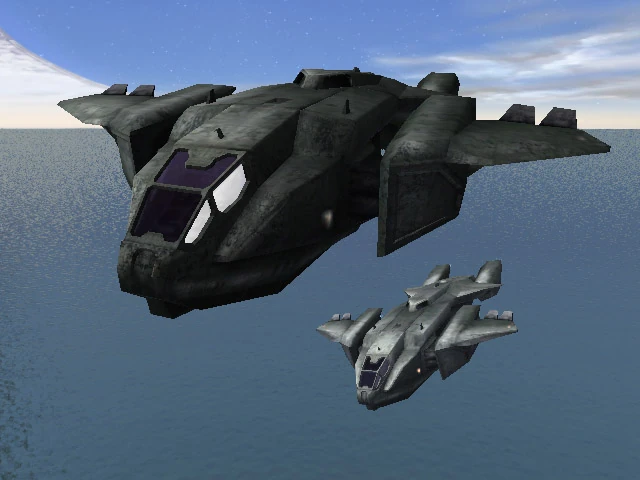
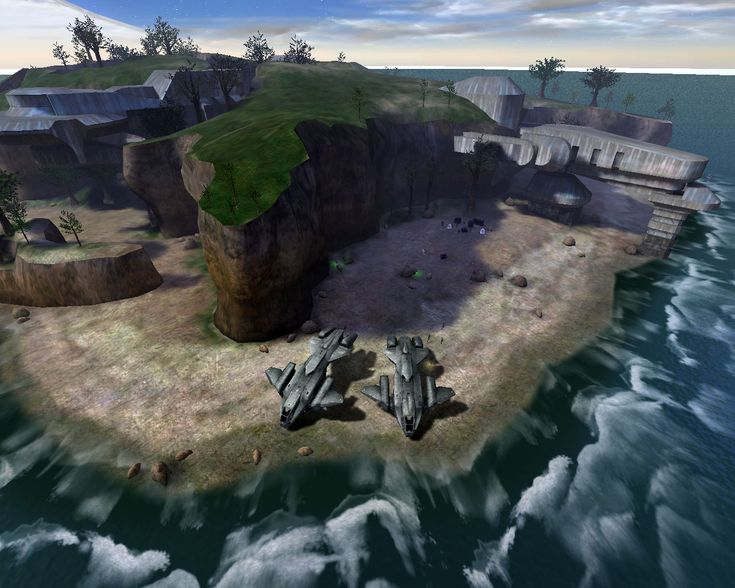

Mergi la inceput
Mergi inapoi
The Silent Cartographer
Misiunea începe cu o debarcare spectaculoasă pe o insulă tropicală, unde Covenant
apără cu înverșunare structurile. Master Chief se luptă prin plaje, tuneluri subterane
și fortărețe pentru a descoperi locația camerei de control a Halo-ului.Atmosfera este vibrantă,
iar luptele sunt dinamice, punând accent pe utilizarea vehiculelor precum Warthog și Ghost. În final,
Chief descoperă locația camerei de control și o transmite Cortanei.


Urmatorul nivel.